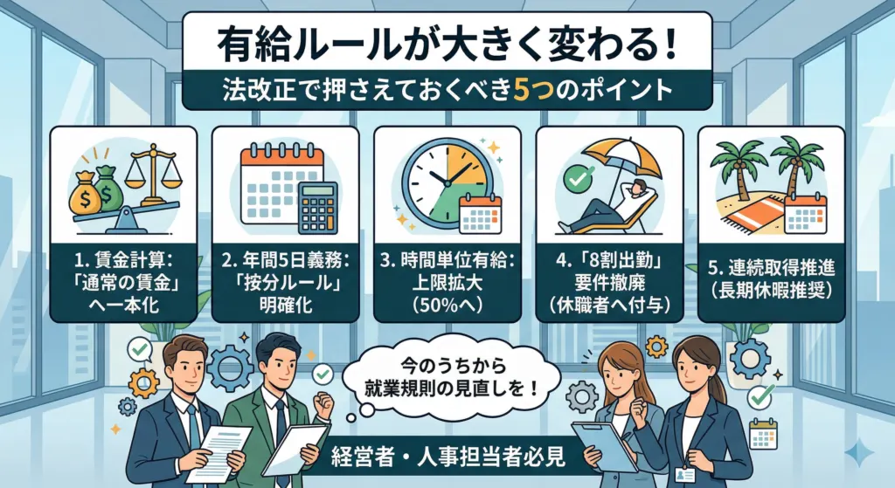

有給ルールが大きく変わる！今後の法改正で押さえておくべき5つのポイント

「有給休暇のルールが近々大きく変わるらしいけれど、具体的に自社にどんな影響があるのか分からない……」と不安に感じていませんか？
今後の法改正は労働者にとって嬉しい内容が多い一方で、経営者や人事担当者からすると「シフトが組めなくなる」「管理の手間が増える」など、実務への負担増は悩ましい問題ですよね。
もしルールを正しく理解せず、就業規則もそのまま放置してしまうと、無駄に有給を与えてしまったり、思わぬ労使トラブルに発展したりするリスクがあります。
そこで本記事では、人事歴30年のキャリアと人事コンサルの経験を持つ筆者が、経営者の視点で「有給ルールが変わる法改正5項目」について分かりやすく解説します。
今回は、数ある労務関連のルールのなかでも、特に「経営者・人事担当者が今のうちから絶対に押さえておくべきポイント」に絞ってまとめました。
会社を守り、従業員にとっても働きやすい環境をスムーズに整えるために、ぜひ最後までお読みいただき、今後の就業規則見直しや対策にお役立てください。
1. 有給の賃金計算｜「通常の賃金」への一本化
現在、有給休暇を取得した際の賃金計算には、以下の3つの方法があり、会社が就業規則等で定めて選べます。
| 計算方法 | 概要 | パート・アルバイトへの適用時の特徴 |
| ① 通常の賃金 | その日に通常通り働いたとみなして支払う | その日の労働時間（シフト）によって支払額が変動する。 |
| ② 平均賃金 | 直近3ヶ月の賃金総額 ÷ 暦日数（休日含む） | 休日が多いパートタイマーの場合、1日あたりの単価が下がりやすい。 （※最低保障額の規定あり） |
| ③ 標準報酬日額 | 健康保険の標準報酬月額 ÷ 30日 | 社会保険加入者のみ対象。労使協定が必要。 |
なぜ平均賃金を採用する企業があるのか？
シフトが不規則なパートタイム労働者の場合、1日8時間働く日もあれば、1日3時間しか働かない日もあります。
もし「通常の賃金」を採用していると、あなたは「8時間のシフトの日に有給を使った方がお得」と考えるはずです。
企業側からすると、最も人件費が高い日に休まれる上に、満額（8時間分）の給与を支払う必要があるため、負担が大きくなります。
 まつお
まつおこれを防ぐため、どの日に休んでも過去の平均から算出した一定額を支払う「平均賃金方式」を採用しているのです。
コストを抑えつつ計算の手間を省けます。
今後は通常の賃金に一本化される議論がされている
この「平均賃金方式」には、「有給を取得すると、普通に働くよりも収入が減ってしまう」という労働者側のデメリットがあります。
たとえば、8時間働く予定だった日に有給をとっても、平均賃金である5時間分しか支払われないなどです。
これは「有給休暇を取得したことに対する不利益取扱いの禁止」という労働基準法の根本的な考え方と矛盾を生みやすく、有給取得をためらう原因にもなります。
そのため、多様な働き方が広がる中で「いつ休んでも、その日に働く予定だった分の賃金を100%保障する（＝通常の賃金への一本化）」という方向で議論が進んでいます。
企業に求められる今後の対策と影響
これが「通常の賃金」に一本化された場合、企業側には以下のような影響と対策が求められます。
極端なシフトの見直し（シフトの平準化）
「今日は2時間、明日は8時間」といった極端なシフトを組んでいると、8時間の日に有給が集中した場合の人件費負担が跳ね上がります。
これを防ぐため、可能な限り「1日5時間」など、日々の労働時間を平準化（一定に）するシフト管理が有効です。
シフト決定前の有給申請ルールの明確化
「通常の賃金」は「その日働く予定だった時間」をベースに計算します。
となれば、「翌月のシフトが決まる前に有給の申請があった場合、何時間分として計算するのか？」と疑問に思うでしょう。
そのような場合は、就業規則に、以下のように明記しておく必要があります。
「シフト決定前の有給申請については、雇用契約書に定める『所定労働時間』または『過去○ヶ月の平均実労働時間』をみなし労働時間として計算する」
人件費予算の再構築
これまで「平均賃金」で安く抑えられていた有給休暇のコストが、実態に即した「通常の賃金」に引き上げられます。
そのため、飲食・小売・サービス業などのパート・アルバイトを多く抱える企業は、有給取得率の向上も加味した上で、人件費予算の上振れを想定しておく必要があるでしょう。
まつおシフトによって会社の負担が大きく変動するので、今後は極端にバラバラなシフトを組まないなどの対策が必要です。
2. 年間5日取得義務｜復職者・退職者に対する「按分ルール」の明確化
現在、年10日以上の有給が付与される労働者には「年間5日の有給取得」が義務付けられています。
しかし、長期間休業していた復職者や退職予定者に対する取り扱いが曖昧です。
たとえば「11ヶ月間休職して復職した直後の従業員」や「付与後すぐに退職する従業員」に対しても5日取らせないといけないのか？ 取らせなければ30万円の罰金を払う必要があるのか？ といった問題です。
現在の課題：企業を悩ませる2つのグレーゾーン
一律「5日」というルールのままでは、以下のようなケースで物理的・実務的な無理が生じます。
（例）4月1日に有給が付与され、5月末で退職する従業員
【問題点】
この2ヶ月の間に無理やり5日間の有給を取らせなければならないのか？ もし引き継ぎなどで忙しく3日しか取れなかった場合、退職した後に会社は罰則を受けるのか？
（例）うつ病などで長期間休職し、有給の付与日から11ヶ月経ったタイミングで復職した従業員
【問題点】
法律を厳密に守ろうとすると、復帰後の残り1ヶ月で5日休ませなければなりません。しかし、これは「徐々に業務に慣れさせる（リハビリ出勤）」という復職支援の目的に逆行してしまいます。
これまで労働基準監督署などは、通達やQ&Aで「休職等の期間を除いた残りの期間で、可能な限り取得させるよう努めれば法違反としては取り扱わない」といった運用上の配慮をしてきました。
しかし、これはあくまで解釈に過ぎず、企業側には「いつ指摘されるか分からない」という不安があるのも事実です。
年間5日取得義務｜復職者・退職者に対する按分ルールの明確化
これに対して、今後は一律で「5日」とせず、在籍期間に応じて取得義務日数を按分（例：半年しかいないなら2.5日など）するルールが検討されています。
2019年からスタートした「年5日の年次有給休暇の確実な取得（取得義務化）」は、違反した企業に「従業員1人につき30万円以下の罰金」が科される可能性があるため、企業にとって非常に神経を使うルールです。
しかし、現行の法律は「付与日から1年間」を前提に作られているため、「1年間フルで働くわけではない従業員」に対する扱いが法的に曖昧となっており、現場に混乱を招いていました。
法改正の方向性：「按分ルール」の導入
このグレーゾーンを解消し、実態に即した法律にするために検討されているのが「在籍期間（または稼働期間）に応じた比例按分ルール」です。
（考え方）
1年間在籍して「5日」だから、在籍期間が短いなら、その比率に応じて義務日数も減らす。
（計算イメージ）
半年で退職する場合： 5日 × (6ヶ月 / 12ヶ月) ＝ 2.5日
休職により実質3ヶ月しか稼働しなかった場合： 5日 × (3ヶ月 / 12ヶ月) ＝ 1.25日
※実際の法制化にあたっては、「2.5日」や「1.25日」といった端数をどう処理するのか（切り上げるのか、半日単位を認めるのか等）が今後の議論の焦点になりそうです。
企業に求められる今後の対策と影響
この「按分ルール」が明確化されれば、企業にとっては「法律を守りやすくなる（無理な有給消化をさせなくて済む）」という大きなメリットがあります。
一方で、管理面では新たな対応が必要です。
勤怠管理の複雑化（システム導入の必要性あり）
これまで「全員一律で年間5日」をクリアしているかチェックすればよかったものが、「Aさんは退職予定だから○日」「Bさんは休職明けだから○日」と、従業員個別の状況に応じた義務日数の再計算が必要になります。
まつお手作業での管理はミスを誘発しやすいので、勤怠管理システムの導入が必須となるでしょう。
退職時の引き継ぎスケジュールの適正化
退職予定者に対して「按分した日数」の取得義務が法的に確定します。
そのため、退職日までのスケジュールを、これまで以上に計画的に組まなければなりません。
休職・復職プログラムとの連携
復職者に対する取得義務日数が合理的な日数に調整されることで、純粋に本人の体調回復にフォーカスしたリハビリ出勤計画が立てやすくなります。
人事労務担当者は、産業医等と連携し、「按分された有給をどのタイミングで使わせるのが本人の負担軽減になるか」を検討しやすくなるでしょう。
3. 時間単位の有給取得｜上限の拡大（付与日数の50%へ）
有給休暇は、労使協定を結べば「時間単位」で取得することも可能です。
まつおよくあるのは、少し遅刻して病院に行ってから出社するなどですね。
ただし、現在のルールでは、時間単位で取得できるのは「年間5日分（1日8時間労働なら40時間分）まで」と上限が決まっています。
これが「付与日数の50%まで」拡大される動きがあるのです。
| 項目 | 現在のルール | 今後の法改正の方向性（案） |
| 取得上限 | 一律で年間5日分まで | 付与日数の50%まで |
| 影響の具体例 （年20日付与のベテランの場合） | 5日分（＝40時間分 ※1日8時間労働の場合）が上限。 | 10日分（＝80時間分）まで時間単位で使えるようになる。 |
| 影響の具体例 （年10日付与の1年目の場合） | 5日分（＝40時間分）が上限。 | 5日分（＝40時間分）で、現在と変わらない |
もし1回の付与で20日もらえる人なら、その半分の10日分（80時間分）も時間単位で使えるようになる計算です。
労働者にとっては非常に使い勝手が良くなりますが、経営者や人事からすると「誰が何時間消化したか」という日々の勤怠管理が煩雑になります。
なぜ上限を拡大するのか？（法改正の背景）
一番大きな理由は、「労働者のワークライフバランスの向上」と「多様な働き方の支援」です。
育児や介護と仕事を両立する層が増える中、「1日単位」や「半日単位」の有給だけでは柔軟な対応が難しくなっています。
上限を50%に引き上げることで、「毎週水曜日は早上がりする」「介護のために毎日1時間遅出する」といった柔軟な働き方を有給でカバーしやすくなります。
そうすれば、結果的に国が推し進める「年次有給休暇の取得率向上」にもつながると期待されているからです。
現場・企業側が直面するジレンマと課題
今回の改正は労働者にとってメリットが非常に大きいと言えるでしょう。
その反面、経営者や人事労務担当者、現場の管理職にとっては「管理コストの爆発的な増加」と「現場オペレーションの混乱」という大きな課題が生じます。
「誰が・いつ・何時間いるのか」の把握が困難に
「Aさんは10時から12時まで中抜け」「Bさんは15時で早退」といった細切れの不在が日常的に発生すると、チーム内の連携や会議の設定が難しくなります。
特に、小売業、飲食業、コールセンター、工場など「その時間に人がいないと回らない職場」では、シフトや人員配置が崩壊しかねません。
勤怠管理と「繰り越し計算」の泥沼化（人事の負担）
時間単位の有給は、「1年間で何時間使ったか」を分・時間単位で正確にカウントする必要があります。
まつおさらに厄介なのが「翌年への繰り越し」です。
「昨年余った時間単位の有給」と「今年新たに付与された有給のうち、時間単位で使える枠」を合算し、さらに上限（50%）に収まっているかを従業員ごとに管理しなければなりません。
Excelや紙での手計算をしている企業では、ほぼ不可能でしょう。
企業に求められる今後の対策
上限拡大が決定した場合、企業は「制度を入れるか・入れないか」も含めて、以下の対策を講じる必要があります。
勤怠管理システムの導入・改修（必須）
複雑な時間単位の有給残数を自動計算できる「クラウド型の勤怠管理システム」の導入が急務です。
「あと何時間、時間単位で休めるのか」を従業員自身がシステム上で確認できるようにしないと、人事への問い合わせが殺到するでしょう。
このような問い合わせは、担当者にとって、大きな負担になります。
取得ルール（労使協定）の設計
時間単位有給の対象者を「全従業員」とするのか、「育児・介護等の事由がある者」に限定するのか。
また、「取得は1時間単位とするか、2時間単位とするか」など、自社の業務に支障が出ない範囲でのルール決めが必要になります。
これには、労使協定の結び直しが必要です。
ここで、従業員側が「納得いかない」となれば、そもそもルールの設定ができません。
まつお事前の根回しなどを密に行うと、スムーズです。
「中抜け」を前提とした業務プロセスの構築
細切れの不在が当たり前になることを前提に、業務の属人化を解消することも欠かせません。
チャットツールやマニュアルを活用した情報共有を徹底するなど、非同期でも仕事が回るチーム作りが必須です。
AIでの自動化も視野に入れましょう。
4. 有給の付与要件｜「8割出勤」要件の撤廃
有給が付与される要件は、現在以下の2つです。
- 6ヶ月継続勤務していること
- 全労働日の8割以上出勤していること
このうち、「8割以上出勤」という要件が撤廃され、「継続勤務さえしていれば付与される」ようになる可能性があります。
これは、「長期間休職していて全く出勤していない従業員にも、有給が付与される」という意味です。
たとえば、入社後すぐに半年間休職し、復職した瞬間に有給が10日分付与されるといった事態が起こり得ます。
これは経営者にとって非常に大きな影響です。
| 項目 | 現在のルール | 今後の法改正の方向性（案） |
| 付与の要件 | ① 6ヶ月継続勤務 ② 全労働日の8割以上出勤 | ① 6ヶ月継続勤務のみ （出勤率は問わない） |
| 休職者の扱い | 休職期間が長く、出勤率が8割を切った年は翌年の有給が付与されない（0日）。 | 全く出勤していなくても、在籍している限り毎年規定の日数がフルで付与される。 |
なぜ「8割要件」をなくそうとしているのか？
廃止しようとしている理由は「病気治療や育児・介護と仕事の両立支援」です。
現在の8割要件では、病気で長期療養をして有給を使い果たした従業員が、翌年復帰した際に有給が1日も付与されず、通院のために休むと欠勤（減給）になってしまいます。
これを防ぎ、労働者が安心して治療や生活と仕事を両立できるようにするための「セーフティネット」として、撤廃が議論されているのです。
経営者・企業側が直面する3つのリスク
労働者保護の観点では理にかなっていますが、企業側からすると以下のような深刻な事態が想定されます。
「働いていないのに有給が増え続ける」事態の発生
今後は「入社直後にメンタル不調で半年休職し、1日も働いていないのに復職した瞬間に10日間の有給が付与される」といったことが合法的に起こります。
さらに、休職が2年、3年と及ぶ場合、その間も毎年有給が付与されるため、長期間休職している従業員が、常に最大40日分の有給を保有している状態になるのです。
休職期間の実質的な延長（有給消化）
就業規則で定めた休職期間が満了し、本来であれば「退職（または解雇）」となるタイミングで、「溜まっている有給を40日分消化してから退職します」と主張される可能性があります。
企業側は働いていない従業員に対して、さらに約2ヶ月分の給与を全額支払い続けなければならず、社会保険料の会社負担も継続しなければなりません。
真面目に出勤している従業員からの不満
「毎日頑張って働いている自分と同じ日数の有給が、ずっと休んでいるあの人にも付与されている」という事実は、現場のモチベーション低下や不公平感を招く恐れがあります。
まつおこれが一番厄介かもしれません。
不満が高まれば、退職につながる可能性が大きくなります。
企業に求められる今後の対策
この改正が現実のものとなった場合、企業は「有給のルール」だけでなく、「休職制度そのもの」を根底から見直す必要があります。
対策①｜休職制度（私傷病休職）の厳格化・期間見直し
有給の付与要件が緩くなる分、会社独自の制度である「休職期間」の設計を見直す企業が増えるでしょう。
たとえば、「勤続年数が短い従業員の休職可能期間を短縮する」「休職に入るための診断書の基準を厳格にする」といった防衛策です。
対策②｜復職基準の明確化
「有給だけ消化して結局辞める」「復職と休職を繰り返して有給を取り続ける」といった事態になりかねません。
そのため、「本来の業務を通常通り遂行できる状態まで回復しているか」といった、復職の判定基準（産業医との連携など）を就業規則でこれまで以上に厳密に定めておく必要があります。
対策③｜メンタルヘルス対策の強化（休職させない予防策）
有給付与や社会保険料といった、休職者が発生した後のコストが上がるため、「いかに休職者を出さないか」の予防への投資も必要でしょう。
たとえば、ストレスチェックの活用、労働時間の適正化、管理職のラインケア研修などです。
一見、コストアップに見えますが、長い目で見ると、リスクヘッジとなるためコスト削減につながります。
5. 有給の連続取得の推進｜長期休暇の推奨
日本の有給休暇は歴史的に「病気になったときの保険」や「冠婚葬祭・役所への用事」といった、「欠勤による給与減額を防ぐための穴埋め」として使われてきた背景があります。
そのため、1日単位で細切れに取得するケースが多いです。
しかし、労働基準法における年次有給休暇の本来の目的は「労働者の心身の疲労を回復させ、ゆとりある生活を保障すること」とされています。
まつお国は本来の趣旨に立ち返り、欧米諸国のような「まとまった日数の連続取得」を推進し始めました。
| 項目 | 細切れ取得（従来の日本型） | 連続取得（国が推進するバカンス型） |
| 取得期間 | 1日〜2日を散発的に取得 | 1週間〜2週間以上をまとめて取得 |
| 主な目的 | 用事、軽い体調不良、一時的な休息 | リフレッシュ、長期旅行、自己研鑽 |
| 労働者のメリット | 柔軟に予定を組みやすい | 仕事から完全に離れ、深い休息が得られる |
| 企業側の影響 | 1〜2日の不在なら周囲のカバーで乗り切れる | 長期不在となるため、業務体制の根本的な見直しが必要 |
労働者にとって「長期休暇の取得」は非常に魅力的です。
しかし、深刻な人手不足に悩む日本の企業にとっては、「誰かが1〜2週間も抜けたら現場が回らない」という現実に直面するでしょう。
「この業務はAさんしか分からない」「この顧客の担当はBさんだけ」といった属人化が起きている職場では、その人が長期休暇を取ると業務が完全にストップしてしまいます。
また、「全員が出勤してようやく回る」という余裕のないシフトを組んでいる場合、長期休暇はおろか、数日の有給取得すら周囲へのしわ寄せを生み、職場の人間関係を悪化させる原因になりかねません。
企業に求められる今後の対策
「長期休暇を取れる会社」であることは、今後の採用活動においてアピールポイントになります。
企業は以下のような対策を講じて「休んでも回る仕組み」を作っていくとよいでしょう。
対策①｜計画年休（年次有給休暇の計画的付与制度）の積極的活用
労使協定を結ぶことで、個人が自由に取得できる有給（最低5日）を残した上で、それ以上の有給日数を会社が計画的に割り振れる制度です。
お盆や年末年始の休業日に有給をくっつけて「全社一斉の大型連休」にする、あるいは閑散期に部署ごとに交代で1週間の連続休暇を割り振るなど、計画的にシフトから外す工夫が必要となります。
対策②｜徹底した業務の標準化とマルチタスク化
誰が休んでも業務が滞らないよう、マニュアルの整備や情報共有を徹底する必要があります。
また、一人の従業員が複数の業務をこなせるようにする「ゼネラリスト」の教育を進め、互いにカバーし合えるチーム作りが欠かせません。
対策③｜休暇を前提とした人員計画とIT化
これからの時代は「常に誰かが休んでいる状態」が当たり前になるでしょう。
これを前提として、少し余裕を持たせた人員計画を組むか、それが無理な場合はAIや自動化ツール、アウトソーシングの導入を検討すべきです。
まつお「人がやらなくてもよい業務」を極限まで減らしていく経営努力が必要です。
今のうちから就業規則の見直しを！
今回解説した5項目は即時施行ではありませんが、「労働者の権利拡充と企業側の管理厳格化」という法改正の方向性は確実です。
これまで曖昧な運用で乗り切れていた労務管理は、今後通用しなくなります。
特に「8割出勤要件の撤廃」による休職者への有給付与といった経営リスクを防ぐには、就業規則の見直しが急務です。
勤続年数に応じた休職期間の上限設定や、厳密な復職基準の明記など、会社を守る防衛線を今のうちに張っておく必要があります。
また、時間単位の有給拡大などで勤怠管理は個人ごとに複雑化するため、手作業や古いシステムでの対応は不可能です。
法改正を待たずにデジタル体制への移行をおすすめします。
こうした制度の変化は、経営者や人事担当者にとっては、一時的に負担になるかもしれません。
しかし、「誰が休んでも回る強靭な組織体制」へアップデートするチャンスでもあるのです。
会社と真面目に働く従業員を守るため、今すぐ就業規則の総点検と勤怠管理体制の整備に動き出しましょう。
採用・人事やAI活用のご相談を受け付けています
記事の執筆、採用支援、AI導入支援など、まずはお気軽にご相談ください。
ご相談はこちら